02
六平台快速思考 · 回答与引用实录
以下为 2026-10-14 当天逐平台提问的留存：每题含回答要点、页面截图与引用来源分析。完整全文与全部截图见实验档案目录 captures/。
豆
豆包（对话版）
快速回答引用：短视频 / 图文营销帖Q1 · 5000元安卓旗舰
结构 = 一句话总纲 + 对比表 + 分机型点评 + 选购结论 + 追问建议。联网检索并展示引用（参考 27 篇，覆盖 5 个搜索关键词）。
Q2 · 骁龙8至尊版 vs 天玑9400
检索 18 篇资料后作答，同样以总纲 + 对比 + 分点结论组织。
Q3 · 端侧 AI 手机
检索 24 篇资料作答，结论 + 功能拆解 + 厂商点评结构。
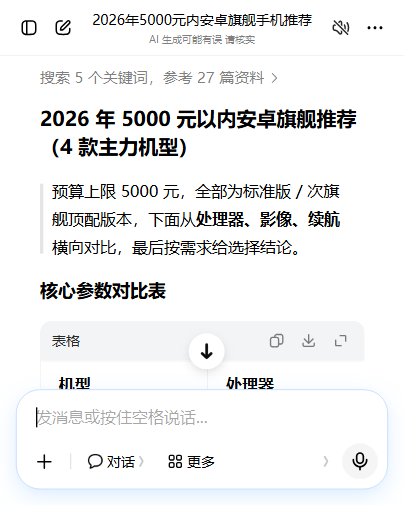
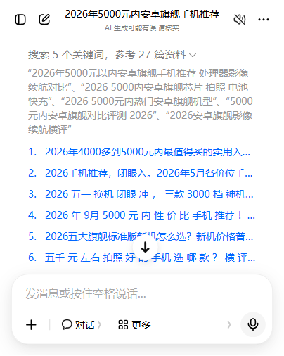
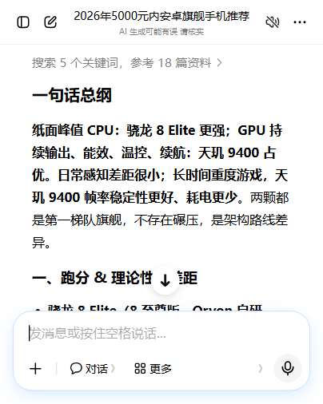
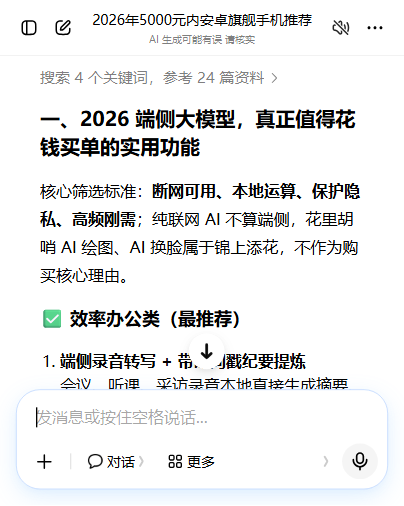
引用来源特征
- 引用条目呈“短视频 / 图文种草”形态：口语化带货标题、带 #话题标签（如“2026五一换机闭眼冲，三款3000档神机 #手机 #数码科技”），明显偏向抖音、小红书式短内容。
- 回答不展示来源站名/域名，只给“参考 N 篇资料”计数与检索关键词。
K
Kimi（月之暗面）
快速 · K3引用：通用网页搜索（内联编号）Q1 · 5000元安卓旗舰
显示“搜索网页（49 个结果）”，正文用 web_search:1#N 编号内联引用，标注“使用 2 个工具”。结构 = 结论 + 表格 + 分维度论证 + 引用。
Q2 · 骁龙8至尊版 vs 天玑9400
“使用 1 个工具”，编号内联引用网页结果。
Q3 · 端侧 AI 手机
同类结构，结论先行 + 分节论证。
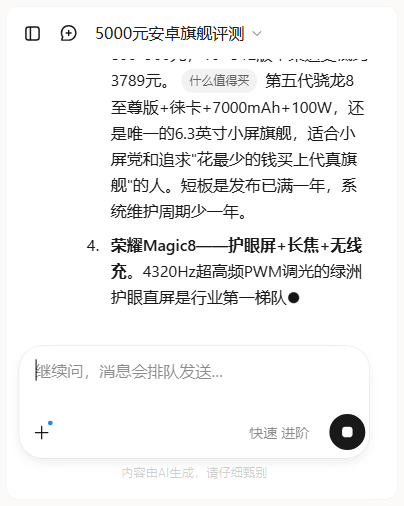
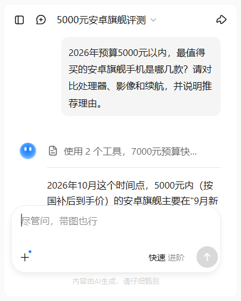
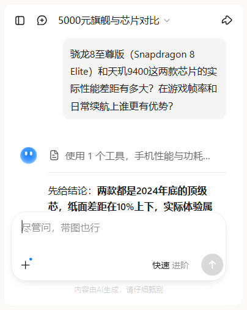
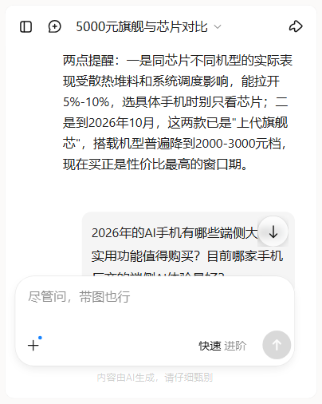
引用来源特征
- 依赖通用网页搜索，引用混合厂商官网、门户资讯、专业评测等，无单一媒体倾斜。
- 引用以“网页”为单位呈现，标注搜索命中数（49 / 15 等），透明度较高。
D
DeepSeek
快速 + 智能搜索引用：网页搜索编号引用Q1 · 5000元安卓旗舰
开启智能搜索（未开深度思考），底部“搜索到 15 个网页”，正文带 -N 编号引用。结构 = 结论先行 + 分节（游戏/续航/建议）+ 总结。
Q2 · 骁龙8至尊版 vs 天玑9400
同样 15 个网页、编号引用，分维度对比后给选购建议。
Q3 · 端侧 AI 手机
编号引用 + 分节论证，结尾追问引导。

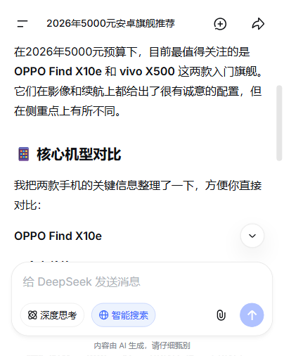
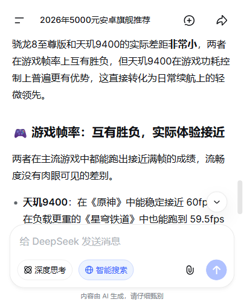
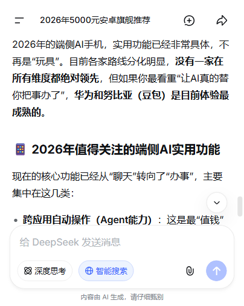
引用来源特征
- 网页搜索混合引用，底部明确计数“搜索到 N 个网页”，正文用编号对应来源。
- 来源无平台级倾斜，偏传统网页内容生态。
文
文心一言（百度）
快速 · 联网搜索引用：百家号 + 百度生态 + 站群域名Q1 · 5000元安卓旗舰
结论 + 核心参数横向对比表 + 按需求分点推荐。回答尾部列出完整引用标题与来源，引用 30 条。
Q2 · 骁龙8至尊版 vs 天玑9400
分节对比（核心性能差距 / 游戏帧率 / 日常续航 / 最终选购建议），引用含品玩、搜狐新闻、百家号等。
Q3 · 端侧 AI 手机
结论 + 功能拆解 + 主流厂商对比（荣耀 / 华为 / OPPO / 小米）。
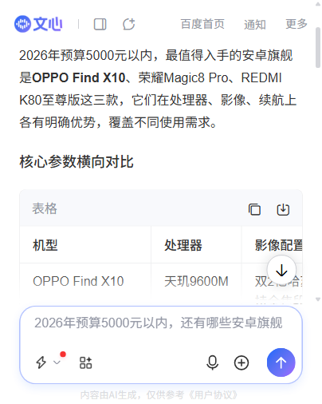
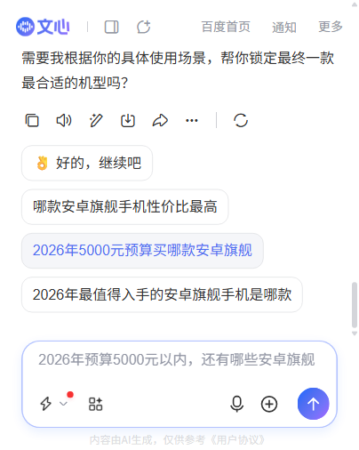
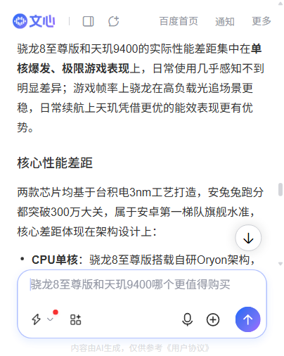
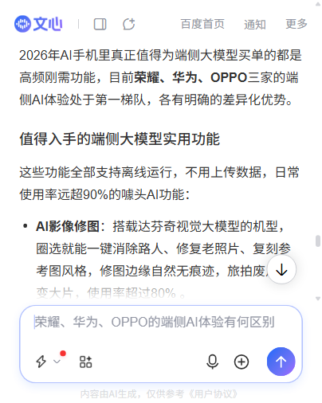
引用来源特征
- 引用高度集中于百度自家生态：百家号占绝对多数，另有 IT之家、品玩、搜狐新闻、新浪新闻。
- 混入一批疑似 SEO 站群域名（h5.article.xxx.cn / wap.article.xxx.cn / 3g.article.shengweitx.com 等约 10 个），内容农场特征明显。
- 回答尾部附 OPPO 商城 / 京东自营价格卡（电商导流痕迹）。
元
腾讯元宝
快速回答引用：中关村在线 + 太平洋科技Q1 · 5000元安卓旗舰
先说结论 + 避坑提醒 + 对比表 + 按人推荐 + 买前提醒。状态条显示“已处理/已思考 N 次、搜索 M 次资料”。点“源”展开“引用来源（50）”面板。
Q2 · 骁龙8至尊版 vs 天玑9400
引用 Android Authority、极客湾、电脑王阿达等实测数据，先厘清芯片代际再对比。
Q3 · 端侧 AI 手机
功能实测表格 + 各厂商端侧模型对比（华为/荣耀/OPPO/vivo/小米/努比亚×豆包），引用中国电信研究院 AITMark、CNMO。
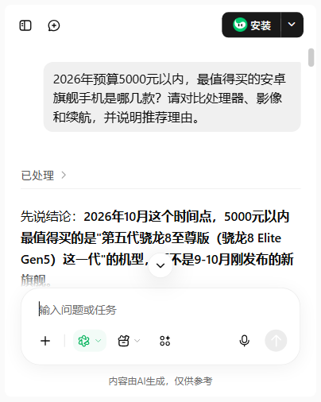
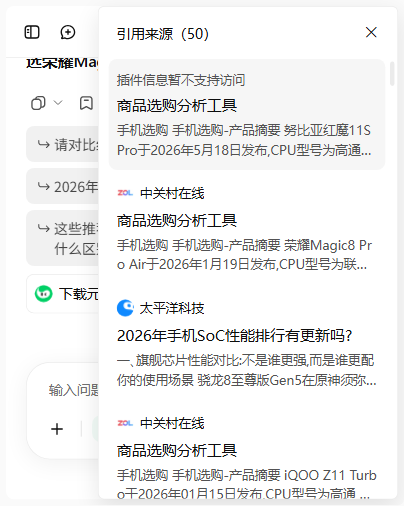
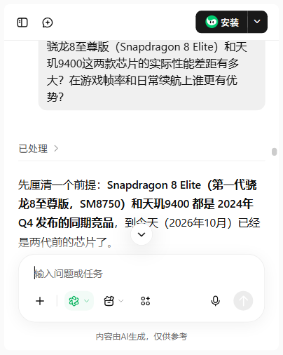
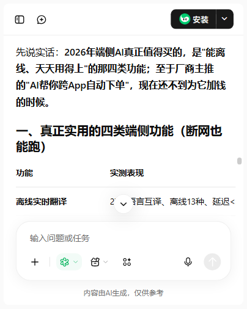
引用来源特征
- 来源高度集中：中关村在线 + 太平洋科技（电脑数码垂直媒体 / 参数库），通过“商品选购分析工具”插件取数。
- 补充国际评测源（Android Authority）、极客湾、电脑王阿达、中国电信研究院 / CNMO 等第三方权威评测。
千
通义千问（Qwen3.7）
快速引用：短视频博主内容 + 少量网页Q1 · 5000元安卓旗舰
“已完成分析，共参考 14 篇资料”，结论 + 表格 + 按场景推荐。
Q2 · 骁龙8至尊版 vs 天玑9400
参考 9 篇资料，先给结论再分维度论证。
Q3 · 端侧 AI 手机
参考 12 篇资料，厂商对比表 + 按场景选购建议。
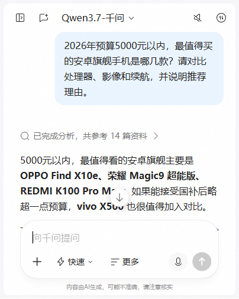
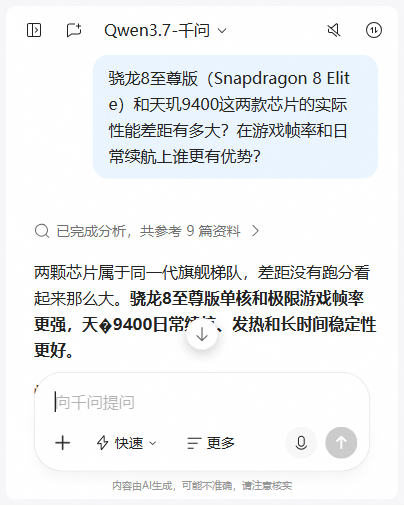
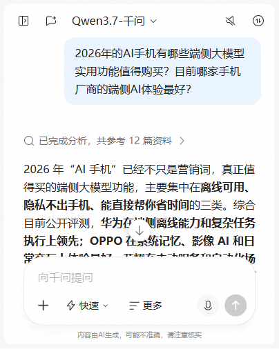
引用来源特征
- 引用来源以短视频博主内容为主（B站 / 抖音视频标题 + 时长 + 博主名，如“小满聊手机”“极客情报站”“凰家评测”），占比约 80% 以上。
- 少量网页来源：今日头条文章、CSDN 博客、百家号、华为开发者联盟等。